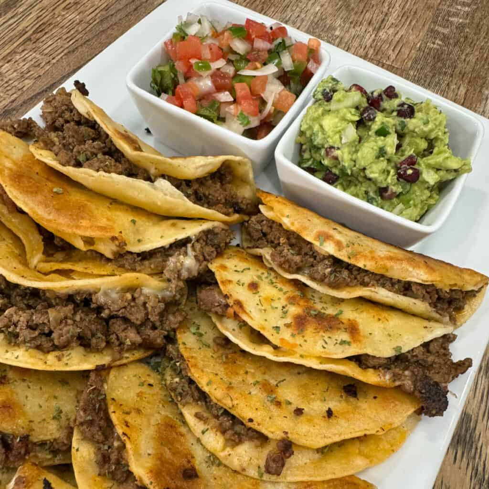

Tacos

Description
Delicious and spicy tacos made with seasoned ground beef, fresh vegetables, and topped with cheese and salsa.
Ingredients
- 1 lb ground beef
- 1 packet taco seasoning
- 8 taco shells
- 1 cup shredded lettuce
- 1 cup diced tomatoes
- 1 cup shredded cheese (cheddar or Mexican blend)
- Salsa (to taste)
- Olive oil (for cooking)
Steps
- Heat a skillet over medium heat and add a drizzle of olive oil.
- Add the ground beef and cook until browned, breaking it apart with a spatula.
- Drain excess fat if necessary, then add the taco seasoning and water as per the packet instructions.
- Simmer for about 5 minutes until the sauce thickens.
- While the beef is cooking, prepare the taco shells according to package instructions.
- Assemble the tacos by filling each shell with seasoned beef, lettuce, tomatoes, cheese, and salsa.
- Serve immediately and enjoy your delicious tacos!
Home